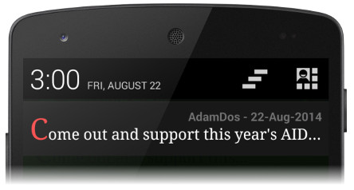
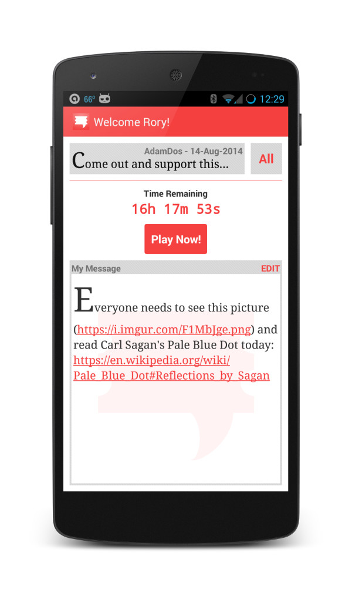

the social lottery
|
What is SocioLotto?
SocioLotto works like a lottery. Each day one winner is chosen and their message is broadcast to everyone. It's like winning the social lottery. Best of all it's free, anonymous, and no registration or crazy phone permissions are required. So go for it and play today!  Why SocioLotto? Because ~1.6 billion people use social media. Even if you have 1000 friends/followers, only 0.000000625% of the social media world is hearing what you have to say. SocioLotto is your chance to be heard by everyone. Try it today from the Google Play store and be heard by the world.
What about iPhone/Pad? - Resources have only been available to develop SocioLotto for Android. However, we are considering developing for iDevices if there is demand. Please contact us below to let us know if you would be interested in seeing SocioLotto on the iPhone and iPad.
Contact us at SocioLotto@gmail.com, we really do care what you have to say! |
 |